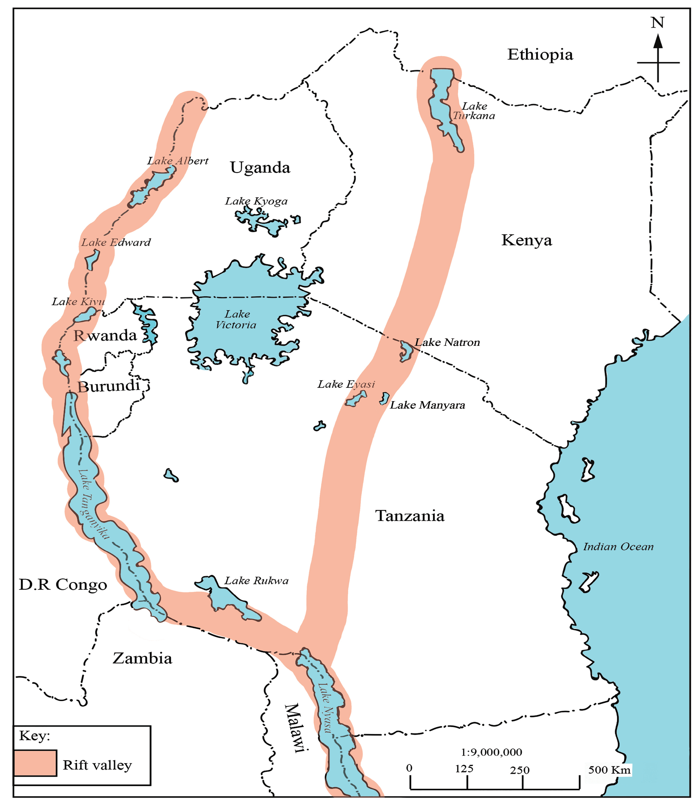

Figure 4.8: The Great East African Rift ValleyBasins
A basin is a natural depression or bowl-shaped hollow on the earth’s surface, formed when part of the land sinks due to earth’s movements. These basins vary in size, with some occupied by water. Basins collect water and sediments from surrounding land surfaces. Some of the basins are found in oceans (ocean basins) or in seas (sea basins) or in lakes (lake basins). Other basins are found higher above sea level and are surrounded by mountains. Basins situated above sea level are drained by rivers and their tributaries are called river basins. These river basins include the Congo River Basin in Africa and
52